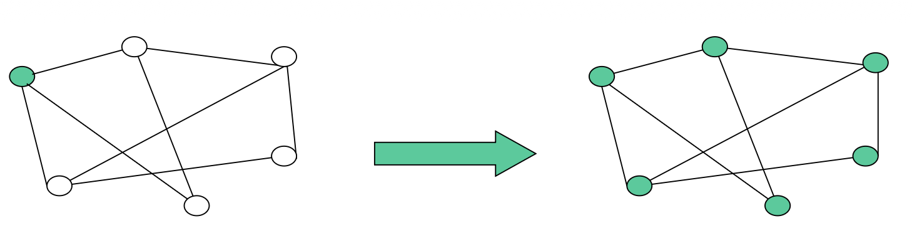
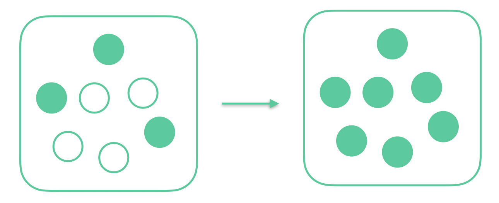

Introduzione agli algoritmi distribuiti
Che cos’è un sistema distribuito
Un sistema distribuito è una collezione finita di entità computazionali eterogenee che comunicano tramite scambio di messaggi per raggiungere un obiettivo comune. L’obiettivo è sempre quello di progettare algoritmi distribuiti che siano: - corretti (risolvono davvero il problema richiesto), - efficienti (hanno un costo “piccolo” rispetto alle risorse disponibili).
Esempi di ambienti distribuiti: web, reti di comunicazione, sensor networks, reti robotiche, mobile agents.
Perché usare sistemi distribuiti
Motivazioni tipiche: - condivisione di risorse (stampanti, file, pagine web, …), - tolleranza ai guasti (il sistema resta disponibile anche se alcune parti sono temporaneamente “out of order”), - scalabilità (in dimensione, distribuzione geografica, amministrazione).
Distribuito vs parallelo (da non confondere all’esame)
- Macchina sequenziale: 1 CPU, 1 memoria, operazioni sequenziali.
- Sistema parallelo: più processori con (tipicamente) memoria condivisa, distanze piccole → i problemi principali sono sincronizzazione e mutua esclusione.
- Sistema distribuito: molti processori con memorie separate, distanze grandi → la comunicazione via messaggi è centrale e introduce nuovi problemi (ritardi, coordinamento, conoscenza parziale).
In un ambiente distribuito emergono tre proprietà chiave: 1. Molteplicità: molte entità. 2. Autonomia: memoria privata e clock locali (non necessariamente sincronizzati). 3. Interazione: cooperazione tramite messaggi per “fare di più” rispetto al singolo nodo.
Il modello
Il modello standard del corso è: - una rete rappresentata come un grafo $G=(V,E)$, - nodi $V$ = entità (processi/nodi/siti/agenti…), - archi $E$ = link di comunicazione, - comunicazione message-passing (scambio di messaggi su link).
Proprietà “di base” delle entità
Ogni entità: - ha un input (anche vuoto), - esegue lo stesso codice (protocollo), - deve produrre lo stesso tipo di output (tutte risolvono lo stesso problema).
Stato
Ogni entità $x$ ha un registro $status(x)$ che indica lo stato corrente. Esiste un insieme finito $S$ di stati possibili (es. idle, waiting, computing, …) e in ogni istante $x \in S$.
Eventi
Il comportamento è reattivo: senza evento non c’è azione. Eventi tipici: - tick del clock (interno), - arrivo di un messaggio (interno), - impulso spontaneo dall’ambiente (esterno).
Azioni
Un’azione è una sequenza di attività consentite (computare, inviare messaggi, cambiare stato, leggere/scrivere memoria interna, set/reset del clock, oppure NIL). Le azioni sono: - atomiche (non interrompibili), - terminanti (finiscono in tempo finito).
Comportamento e simmetria
Il behaviour (comportamento) di un’entità è l’insieme delle regole “per ogni stato e per ogni evento, che azione eseguo?”. $$Stato,Evento \implies Azione$$ Molto spesso si assume un sistema simmetrico: tutte le entità hanno lo stesso behaviour (stesso protocollo). Differenze di ruolo (es. initiator vs sleeping) si modellano tramite stati/variabili locali.
Comunicazione
La comunicazione può essere unidirezionale o bidirezionale. Il vicinato di un nodo $x$ è l’insieme dei nodi con cui $x$ può comunicare, indicato spesso come $N(x)$. In particolare: - $N_{o}(x) \implies$ Vicini a cui mandare messaggi (out-neighbours) - $N_{i}(x) \implies$ Vicini da cui ricevere messaggi (in-neighbours) $$N(x)=N_{o}(x) \cup N_{i}(x)$$
Assiomi del modello (cose sempre vere nel modello base)
Il modello generale non parte da “mille assunzioni”, ma da pochi assiomi minimi. Tutto ciò che aggiungi oltre questi assiomi si chiama restrizione (o submodel): rende il protocollo applicabile solo a certi sistemi/reti.
Assioma 1 — Ritardi di comunicazione finiti (Finite Communication/Transmission Delays)
Enunciato (idea): in assenza di guasti, un messaggio inviato da un’entità $x$ a un suo out-neighbor $y$ arriva a $y$ in tempo finito e senza corruzione.
Cosa implica davvero - Non esiste “perdita” di messaggi se non ci sono failure. - Non puoi avere ritardi infiniti: prima o poi il messaggio viene ricevuto.
Cosa NON implica - Non dice che esista un limite superiore noto o costante: il ritardo può essere arbitrariamente grande e imprevedibile (quindi il sistema è naturalmente asincrono).
Conseguenza: se vuoi ragionare “a round” o con tempi deterministici, devi aggiungere restrizioni temporali (es. Bounded delay $\Delta$, unitary delay, synchronized clocks).
Assioma 2 — Orientamento locale (Local Orientation)
Enunciato (idea): ogni entità riesce a distinguere tra i propri vicini: - distingue tra i suoi out-neighbors (a chi può inviare), - distingue tra i suoi in-neighbors (da chi può ricevere), e quando riceve un messaggio sa da quale “porta”/vicino è arrivato.
Interpretazione operativa (porte / port numbers) - Ogni nodo assegna etichette locali (porte) ai suoi link incidenti: sono locali e iniettive (porte diverse per vicini diversi). - Quindi puoi dire: “manda al vicino sulla porta 3” oppure “ho ricevuto dalla porta 2”.
Perché è fondamentale - Senza local orientation, molte primitive (flooding controllato, costruzione di alberi, instradamento su base locale) non sono nemmeno formulabili in modo utile: non potresti scegliere un vicino specifico, né distinguere chi ti ha scritto.
Assiomi vs restrizioni (da ricordare)
- Assiomi: proprietà minime del modello base (valgono sempre).
- Restrizioni: proprietà aggiuntive usate dal protocollo (es. “link bidirezionali”, “total reliability”, “grafo connesso”, “IDs distinti”, “delay bounded $\Delta$”…). Ogni restrizione aumenta la “forza” del sistema ma riduce i casi in cui il protocollo è applicabile.
Restrizioni (assunzioni del modello): sempre esplicitarle
Nel distribuito, la (im)possibilità e la complessità dei problemi dipendono in modo cruciale dalle restrizioni assunte. Ogni protocollo va letto insieme alle sue assunzioni.
Categorie tipiche: - Restrizioni di comunicazione: es. ordinamento FIFO su un link; link bidirezionali (grafo non orientato). - Restrizioni di affidabilità: consegna garantita; modelli di affidabilità parziale/totale; meccanismi di fault detection (se presenti). - Restrizioni topologiche / di conoscenza: connettività del grafo; conoscenza di $n$, $m$, diametro, ecc. - Restrizioni temporali: asincrono (default del corso se non detto), delay bounded (esiste $\Delta$), unitary delay, clock sincronizzati.
Misure di complessità nel distribuito
Per algoritmi sequenziali guardiamo tipicamente tempo e spazio; nel distribuito invece sono centrali: 1. Amount of communication: numero di messaggi scambiati (o più fine: numero di bit). 2. Tempo: ritardo massimo che possiamo avere durante la comunicazione. - tempo ideale (sincrono): 1 unità di tempo per trasmettere 1 messaggio, - tempo realistico (asincrono): i ritardi sono imprevedibili → spesso si conta la lunghezza della catena di messaggi* più lunga (dipendenza causale) in un’esecuzione.
N.B. A differenza dello studio di complessità degli algoritmi classici, mi concentro di più sulla comunicazione tra le varie entità, rispetto a considerare il costo computazionale nelle singole macchine.
Broadcast (Bcast) e protocollo FLOODING
Problema (Broadcast)

Dato un sistema distribuito su un grafo di comunicazione $G=(V,E)$, un solo nodo (l’initiator) possiede un’informazione $I$ e vuole far sì che tutti gli altri nodi la apprendano in tempo finito.
Il requisito “un solo nodo inizia” è l’assunzione Unique Initiator (spesso indicata come $UI^+$: l’initiator è proprio quello che inizialmente ha $I$).
Restrizioni tipiche (standard)
Per discutere Bcast e FLOODING si assumono spesso le standard restrictions
$$R={BL, CN, TR}$$
dove:
- $BL$ (Bidirectional Links): il grafo non è orientato
- $CN$ (Connectivity): il grafo è connesso (tutti raggiungibili)
- $TR$ (Total Reliability): nessun guasto durante l’esecuzione
Prima idea (ingenua)
Idea: INITIATOR invia $I$ a tutti i vicini; ogni nodo SLEEPING che riceve $I$ lo invia a tutti i vicini.
- Stati S = {INITIATIOR, SLEEPING}
- Informazione I
Entità INITIATOR
quando parte:
manda I a tutti i vicini
diventa DONE
se riceve I:
ignora
Entità SLEEPING
quando parte:
dorme
se riceve I:
manda I a tutti i vicini
Questa idea può non terminare: alcuni nodi possono continuare a rimandarsi $I$ all’infinito (loop di messaggi).
Cosa vuol dire “algoritmo corretto” nel distribuito
Per la correttezza servono due proprietà: 1. Safety / Solves the problem: tutti apprendono $I$ 2. Termination: l’esecuzione termina (almeno localmente)
Seconda idea: invio “una sola volta” + stato DONE
Per evitare loop: quando un nodo impara $I$ lo inoltra e poi passa a stato DONE, così non invia più messaggi.
- Stati $S={\text{INITIATOR},\ \text{SLEEPING},\ \text{DONE}}$
- Informazione $I$
Entità INITIATOR
quando parte:
manda I a tutti i vicini
diventa DONE
se riceve I:
ignora
Entità SLEEPING
quando parte:
dorme
se riceve I:
manda I a tutti i vicini
diventa DONE
Entità DONE
qualunque cosa succeda:
ignora
Questo porta a due osservazioni fondamentali: - esiste local termination (i nodi finiscono in istanti diversi quando diventano DONE); - non esiste global termination “conosciuta”: nessun nodo sa quando l’intero processo è finito → termination detection problem.
Protocollo FLOODING (broadcast “standard”)
Ottimizzazione: se un nodo riceve $I$ da sender, non serve rimandarglielo indietro; grazie alla local orientation posso distinguere il mittente e inviare a $N(x)\setminus{sender}$.
- Stati $S={\text{INITIATOR},\ \text{SLEEPING},\ \text{DONE}}$
- Informazione $I$
Entità INITIATOR
quando parte:
manda I a tutti i vicini
diventa DONE
se riceve I:
ignora
Entità SLEEPING
se riceve I da `sender`:
per ogni vicino y ∈ N(x):
se y ≠ sender:
manda I a y
diventa DONE
Entità DONE
qualunque cosa succeda:
ignora
Correttezza (schema di dimostrazione “da esame”)
Tutti ricevono $I$
Sotto $CN$ (Connectivity) e $TR$ (Total Reliability) , esiste un cammino dal INITIATOR a qualunque nodo. Il primo nodo sul cammino che riceve $I$ lo inoltra (una sola volta) ai suoi vicini “in avanti”, e così via: per induzione lungo il cammino, ogni nodo viene raggiunto e riceve $I$.
Terminazione
Ogni nodo (a parte INITIATOR) quando riceve $I$ esegue una sola azione di invio e poi passa a DONE; in DONE non invia più nulla. Quindi ogni nodo termina localmente.
Calcolo della complessità
Notazione
- Grafo $G=(V,E)$
- $n=|V|$ numero di nodi
- $m=|E|$ numero di archi
- $N(x)$ = insieme dei vicini di $x$
- INITIATOR $s$
- Diametro $D(G)$
Misure di complessità nel distribuito: messaggi vs tempo
Nel distribuito si misurano soprattutto:
- Amount of communication: numero di messaggi (o bit) scambiati.
-
Tempo: dipende dal modello temporale assunto.
-
Total synchrony / Ideal time: 1 unità di tempo per trasmettere 1 messaggio (ragionamento “a hop/round”).
-
Asynchrony / Casual time: clock non sincronizzati e ritardi imprevedibili; si misura il tempo come lunghezza della longest message chain tra tutte le possibili esecuzioni.
-
Nota importante: la message complexity non dipende dal fatto che il sistema sia sincrono o asincrono; la time complexity sì, perché cambia la nozione di “quanto dura” un’esecuzione.
Message complexity di FLOODING
Facendo una stima banale, potremmo dire che dato che ogni nodo riceve, invia e poi si ferma: in ogni arco passeranno al massimo 2 messaggi. Quindi potremmo stimare che i messaggi inviati siano $2m ∈ O(m)$.
Però il nostro algoritmo è più preciso in realtà, quindi potremmo fare un'analisi più attenta per calcolare in modo più preciso la complessità legata ai messaggi.
Passo 1 — Conta dei messaggi inviati dal INITIATOR
L’initiator $s$ invia il messaggio una sola volta a tutti i suoi vicini: $$\text{msg inviati da } s = |N(s)|$$
Passo 2 — Conta dei messaggi inviati dagli altri nodi
Ogni nodo $x\neq s$ quando riceve $I$ lo inoltra a tutti i vicini tranne il sender.
Quindi invia esattamente $|N(x)|-1$ messaggi:
$$\text{msg inviati da } x \neq s = |N(x)|-1$$
Passo 3 — Somma totale
Sommo su tutti i nodi: $$M(\text{Flooding}(G))=|N(s)|+\sum_{x\neq s}(|N(x)|-1)$$ Sviluppo: $$ \begin{aligned} M(\text{Flooding}(G)) &= |N(s)|+\sum_{x\neq s}|N(x)| - \sum_{x\neq s}1 \ &= \sum_x |N(x)| - (n-1) \end{aligned} $$
Passo 4 — Uso dell’identità $\sum_x |N(x)| = 2m$ (grafo non orientato)
In un grafo con link bidirezionali (non orientato), la somma dei gradi vale: $$\sum_x |N(x)| = 2m$$ Sostituendo: $$M(\text{Flooding}(G)) = 2m - (n-1) = 2m - n + 1$$
Conclusione: $$M(\text{Flooding}(G)) = 2m - n + 1 \in O(m)$$
Motivazione: la somma dei gradi è $2m$ perché se ci pensi in un grafo connesso quando calcoli il grado di tutti i nodi, in realtà stai contando ogni arco due volte. Infatti ogni arco deve essere conteggiato e viene conteggiato 2 volte perché ha due nodi collegati
Time complexity di FLOODING
perché è $\Theta(D(G))$
Definizioni
- Distanza minima in un cammino da $a$ a $b$ $$d(a,b)$$
- Eccentricità o Radius (distanza minima tra $a$ e il nodo più lontano $y$): $$r(a)=\max_y d(a,y)$$
- Diametro (distanza tra i nodi più lontani tra loro nel grafo): $$D(G)=\max_a r(a)=\max_{x,y} d(x,y)$$
A) Tempo *sincrono = Ideal time (total synchrony)
Assunzione temporale: “1 unità di tempo = 1 hop”, cioè in una unità ogni vicino riceve il messaggio (ragionamento a round).
Upper bound per FLOODING
tempo impiegato dal INITIATOR a raggiungere tutti
In ideal time (1 unità per hop), dopo $t$ unità hanno ricevuto $I$ tutti i nodi a distanza $\le t$ dal INITIATOR.
Quindi il tempo dell’esecuzione con initiator $s$ è:
$$T_s \le r(s)=\max_y d(s,y)$$
Nel worst-case su tutte le scelte possibili di initiator: $$T(\text{Flooding}) \le \max_s r(s)=D(G)$$
Lower bound per qualsiasi broadcast (non solo flooding)
Nel caso peggiore l’initiator può essere un nodo “estremo”, e qualche nodo può essere a distanza $D(G)$.
Quindi nessun algoritmo può fare meglio di:
$$T(\text{Broadcast}(G)) \ge \max_{x,y} d(x,y)=D(G)$$
Conclusione (tight bound): $$T(\text{Flooding}) = \Theta(D(G))$$ N.B. : il diametro di un grafo può essere massimo $n-1$. Se ci pensi per raggiungere il nodo più lontano dovrai al massimo attraversare tutti gli altri nodi del grafo.
B) Tempo asincrono = Casual time (longest message chain)
Assunzione temporale: clock non sincronizzati, ritardi imprevedibili ma finiti; non ha senso parlare di round globali.
La misura consigliata nelle slide è la lunghezza della longest message chain (dipendenza causale) nel worst-case tra tutte le esecuzioni possibili.
Per FLOODING, la catena causale che “porta” $I$ al nodo più lontano dall’initiator deve attraversare almeno $d(s,y)$ hop; nel worst-case:
$$T^{async}(\text{Flooding}) \in \Theta(D(G))$$
dove però l’interpretazione è: numero di messaggi in catena causale, non “unità di tempo fisiche”.
In pratica: stesso ordine $\Theta(D(G))$, ma cambia il significato:
-
sincrono: “$D(G)$ round (1 hop per round)”
-
asincrono: “$D(G)$ dipendenze causali minime lungo il cammino peggiore”
Lower bound sui messaggi per Broadcast: da $n-1$ a $m$
Bound “ovvio”: almeno $n-1$
Alla fine, tutti i $n-1$ nodi diversi dall’initiator devono ricevere l’informazione almeno una volta: $$M(\text{Bcast}) \ge n-1$$
Bound più forte: almeno $m$ (idea dell’arco “non usato”)
Si può mostrare che in un’esecuzione corretta deve passare almeno un messaggio su ogni link nel worst-case, quindi: $$M(\text{Bcast}) \ge m$$
Passaggi dell’argomento (versione Santoro): 1. Supponi esista un protocollo corretto che usa $<m$ messaggi su un grafo $G$. 2. Allora esiste almeno un arco $e=(x,y)$ su cui non passa mai alcun messaggio in quell’esecuzione. 3. Costruisci un nuovo grafo $G'$ rimuovendo $e$ e aggiungendo un nuovo nodo $z$ collegato a $x$ e $y$. 4. Ripeti “la stessa esecuzione” su $G'$: siccome su $e$ non passava nulla, $x$ e $y$ non hanno motivo di inviare a $z$. 5. Quindi $z$ non riceve mai $I$ → contraddizione con la correttezza del broadcast.
Conclusione: qualsiasi broadcast richiede $\Omega(m)$ messaggi.
Risultato finale
Per broadcast sotto le restrizioni standard (e unique initiator), e per FLOODING: - $M(\text{Flooding}(G)) = 2m - n + 1 \in \Theta(m)$
-
$T(\text{Flooding}(G)) \in \Theta(D(G))$
-
$T^{ideal}(\text{Flooding}) = \Theta(D(G))$
-
$T^{async}(\text{Flooding}) = \Theta(D(G)) \text{ (misurato come longest message chain)}$
-
Possiamo fare meglio di così?
Facciamo queste due considerazioni: - Message complexity minima con un albero: - In un albero il numero di archi è $m=n-1$ - $M(\text{Flooding}(G)) = 2m - n + 1 = 2(n-1) - n + 1 = n - 1 =m$
- Message complexity massima con un grafo connesso:
- In un grafo connesso il numero di archi è $m=\binom{n}{2}=\frac{n(n-1)}{2}$
- Quindi $M(\text{Flooding}(G)) \in O(n^2)$
Ma dobbiamo per forza usare il flooding asincrono in un grafo connesso?
Con un broadcast classico avremmo: - $M(SimpleBroadcast)=n-1$ - $T^{ideal}(SimpleBroadcast)=1$
Infatti il flooding è efficiente in un albero, ma non è adatto per i grafi generici.
Wake-up problem

Il wake-up problem è la “versione più generale” del broadcast: devi far partire una computazione che coinvolga tutti i nodi, ma all’inizio solo alcuni sono attivi (possono iniziare a mandare messaggi), mentre gli altri sono ASLEEP e si “svegliano” solo quando ricevono un messaggio.-
Situazione: un task deve coinvolgere tutte le entità, ma inizialmente solo alcune sono attive (awake) e le altre sono inattive (asleep).
-
Obiettivo: svegliare tutti i nodi (portarli nello stato AWAKE).
-
Relazione con Broadcast:
- Broadcast = Wake-up con un solo initiator (un solo nodo inizialmente awake).
- Wake-up = Broadcast con più initiator (più nodi inizialmente awake).
Modello (stati e restrizioni)
- Stati:
- $S = {\text{ASLEEP}, \text{AWAKE}}$
- Stati iniziali:
- $S_{init}={\text{ASLEEP}}$ (tutti asleep, ma alcuni possono svegliarsi spontaneamente)
- Stato terminale:
- $S_{term}={\text{AWAKE}}$
- Restrizioni: quelle “standard” del modello usato nel corso (nelle note: “R”).
Protocollo WFlood (wake-up via flooding)
Obiettivo Tutti i nodi che siano in stato $AWAKE$ (sveglio)
- Stati $S={\text{ASLEEP},\ \text{AWAKE}}$
- Stato iniziale $S_{init}={\text{ASLEEP}}$ (tutti asleep, ma alcuni possono svegliarsi spontaneamente)
-
Stato terminale $S_{term}={\text{AWAKE}}$
-
Messaggio $W$ (richiesta di svegliarsi)
Usiamo la stessa strategia del flooding del broadcast risolve anche il wake-up.
Entità ASLEEP
quando parte:
manda W a tutti i vicini
diventa AWAKE
se riceve W da `sender`:
per ogni vicino y ∈ N(x):
se y ≠ sender:
manda W a y
diventa AWAKE
Complessità in messaggi (message complexity)
- Caso 1 initiator: coincide col flooding del broadcast
- $M = 2m - n + 1$
- Caso generale con $k$ initiator:
- $M = 2m - (n-k)$
- Caso tutti $n$ initiator:
- $M = 2m$
Come si legge $2m-(n-k)$?
-
$2m$ è il conteggio “grezzo”: in un grafo non orientato ogni arco può essere percorso al massimo due volte (una per direzione).
-
Però non tutti i nodi fanno l’azione “receiving(W) then forward”: se un nodo è un iniziatore, si sveglia per spontaneous impulse e non ha un “sender” da escludere in quel primo step (di fatto “manca” un inoltro rispetto al caso in cui si svegliasse ricevendo).
-
Ci sono $k$ iniziatori, quindi i nodi che non sono iniziatori sono $n-k$ e sono proprio quelli che generano quel tipo di inoltro “da ricezione” con esclusione del sender: il termine $(n-k)$ è la correzione che compare nelle slide.
Bound generali
- Per WFlood vale: $$2m \ge M[\text{WFlood}] \ge 2m - n + 1$$
- Quindi in ordine di grandezza:$$M(\text{Wake-Up}/R) \in \Theta(m)$$
Caso speciale: Tree - Se $G$ è un albero e $k'$ è il numero di initiator:$$M[\text{WFlood}/\text{Tree}] = n + k' - 2$$
Complessità in tempo (ideal time / time complexity)
Intuizione: rispetto al broadcast, in generale è non maggiore perché un nodo può essere più vicino a qualche initiator.
Worst case (bound di ordine):$$T(\text{Wake-Up}/R) \in \Theta(d)$$ dove $d$ è il diametro del grafo (come nelle note “ideal time”). - Caso $k=1$ (un solo initiator): il tempo coincide con Flooding, tipicamente $O(D)$.